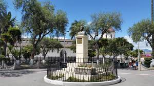

Atuntaqui, también conocida como Santa Marta de Atuntaqui, es una ciudad ecuatoriana; cabecera cantonal del Cantón Antonio Ante, así como la tercera urbe más grande y poblada de la Provincia de Imbabura. Se localiza al norte de la Región interandina del Ecuador, en la hoya del río Chota, a una altitud de 2405 m s. n. m. y con un clima andino de 16 °C en promedio. Es llamada "Capital de la Moda" por su importante producción textil. En el censo de 2022 tenía una población de 25.115 habitantes, lo que la convierte en la quincuagésima octava ciudad más poblada del país. Forma parte del área metropolitana de Ibarra, pues su actividad económica, social y comercial está fuertemente ligada a Ibarra, siendo "ciudad dormitorio" para miles de personas que se trasladan a Ibarra por vía terrestre. El conglomerado alberga a más de 280.000 habitantes. Sus orígenes datan del siglo XVI. En la madrugada del 16 de agosto de 1868, un terremoto provocado por una falla geológica devastó la ciudad y la provincia, Atuntaqui quedó prácticamente destruida. En la actualidad, es uno de los principales núcleos urbanos de la provincia. Es uno de los más importantes centros administrativos, económicos, financieros y comerciales de Imbabura. Las actividades económicas principales de la ciudad son: la industria textil, el comercio y la agricultura.